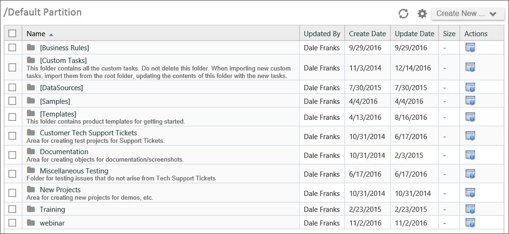
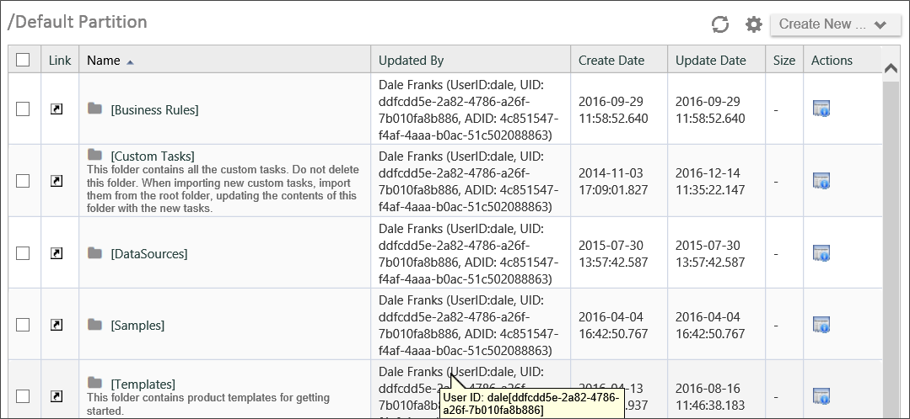
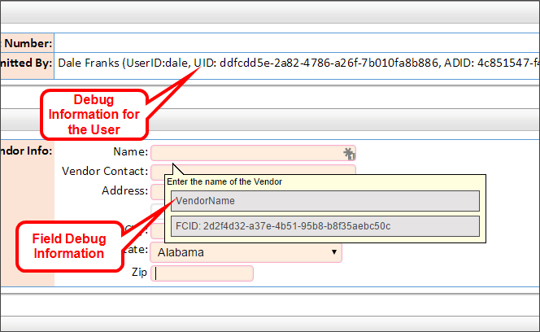

In Debug Mode, however, the Content List shows additional information:

This enhanced view appears throughout the interface, including Forms, showing additional information about every object that is often useful in finding errors or other problems. For example, the image below is a portion of a running Form viewed in Debug Mode.

Note that even the disabled field at the top that contains a user's name shows debug information like the UserID and UID for the user. Additionally, placing your mouse over the Vendor name field in this example displays debug information in the field's tooltip, such as the actual field name and FCID. (The UID and FCID are GUIDs generated by the Process Director database to uniquely identify the objects.)
Debug mode can also provide extra options that aren't available in normal mode. For instance, an option exists in Debug Mode to restart all Workflows or Process Timelines in an error state. This is done by entering Debug Mode in a Knowledge View that returns Workflow or Process Timeline instances, and clicking on the checkbox to select all processes. A new action item will appear that says "Restart Error Workflows". Additionally, when viewing properties for Form or case instances in Debug Mode, you can edit the data directly in the instance properties, although no validation or error-checking will be performed on data edited in this way, so use caution when doing so.
Using Debug Mode, therefore, should be one of your first steps in troubleshooting an issue.
Turning on Debug Mode is simple. Place the mouse pointer in the workspace tab area at the top of the page, and click the right mouse button. This will place the page in Debug mode, and a dialog box will appear notifying you that the mode has been changed. Click the OK button to close the dialog box.
To turn Debug Mode off, place the mouse pointer in the workspace tab and right-click again. A dialog box will once again appear, notifying you that Debug Mode has been turned off.